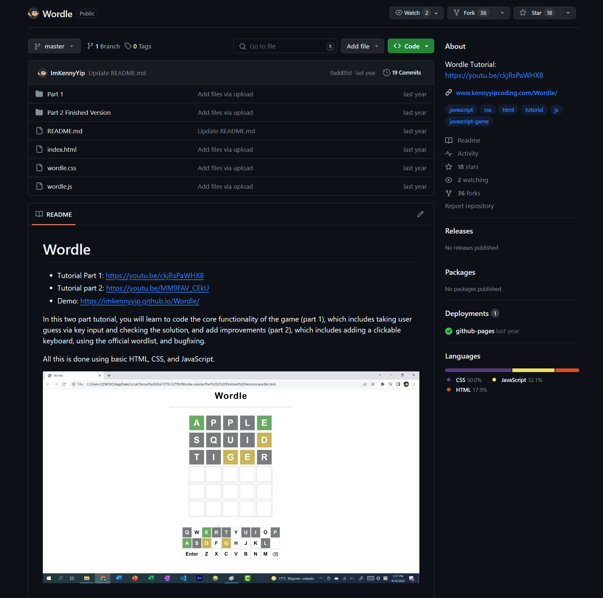

Анализ существующей документации
Документация на GitHub по игре предоставляет подробную информацию о правилах и использовании данного приложения. Главная цель документации — .
Одной из первых частей документации является описание правил игры. Здесь объясняется, что игроку нужно угадывать скрытое , вводя свои предположения. Важно заметить, что игроку предоставляется только одна попытка в день, что создает некоторую сложность и требует хорошей сообразительности.
Документация также содержит информацию о возможностях, предлагаемых в игре. Она описывает различные функции, такие как . В разделе "Подсказки" объясняется, как игрок может использовать отгаданные буквы для получения дополнительных подсказок, что значительно облегчает задачу угадывания слова. Секция "Игра с друзьями" предлагает возможность соревноваться и делиться результатами с друзьями на платформе. Раздел "Статистика" предоставляет игроку информацию о его успехах в игре, позволяя ему отслеживать свой прогресс и улучшать свои навыки.
Более технически ориентированная часть документации на GitHub описывает . Она подробно объясняет, как загрузить игру на различные сервера, что делает ее доступной для широкого круга пользователей. Кроме того, описаны системные требования, которые должны быть выполнены для корректной работы игры, и указаны возможные проблемы, с которыми может столкнуться пользователь и как их решить.
Наконец, документация GitHub также включает инструкции . Здесь описывается процесс внесения своих предложений и разработки новых функций. Это может быть полезно для разработчиков, желающих внести вклад в проект или расширить его возможности.
В заключение, документация по игре Wordle на GitHub обеспечивает полную и понятную информацию о правилах, функциональности, установке и использовании данного приложения. Благодаря этому, пользователи могут успешно развивать свои навыки в игре и получать удовольствие от игрового процесса.